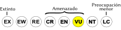

Mazama bricenii
| Venado matacán candelillo | |
|---|---|
| Riesgo de extinción | |
|  Vulnerable (UICN) | |
| Clasificación científica | |
| Reino: | Animalia |
| Filo: | Chordata |
| Clase: | Mammalia |
| Orden: | Artiodactyla |
| Familia: | Cervidae |
| Género: | Mazama |
| Especie: | Mazama bricenii |
| Nombre binomial | |
|
Mazama bricenii Thomas, 1908 | |
| Distribución | |
|
Mapa de distribución de Mazama bricenii | |
Contenido
Información de Evaluación
- Categoría y Criterio Regional: Vulnerable A4cd
- Fecha de Evaluación Regional: 2015
- Evaluadores: Jesús Morales-Campos y Ariany García-Rawlins
- Categoría y Criterio Global: Vulnerable A4c
Justificación
Evaluaciones Previas
1999: Vulnerable (VU)
2008: Vulnerable (VU)
Información General
Nombres comunes
Venado matacán candelillo, candelillo, venado matacán andino, locha, matacán, Mérida brocket, little red brocket deer, rufous brocket deer, dwarf red brocket deer.
Notas taxonómicas
Sinónimos
Descripción
Es la especie de menor tamaño entre los venados matacanes. La longitud cabeza-cuerpo varía entre 85 y 90 cm, la altura en el hombro entre 45 y 50 cm, y el peso puede variar de 8 a 13 kg. Hay poca diferencia de tamaño entre ambos sexos (Dietrich 1993, Lizcano et al. 2010a). Solo el macho posee cornamenta (astas), que son de una sola punta y de hasta 6 cm de largo. Su coloración dorsal rojiza oscura se hace más pálida hacia los costados y vientre, y se vuelve casi negra en las patas y la cabeza. Su garganta es anaranjada. Tiene manchas blancas en el labio superior y en la punta de la mandíbula. La cola es blanca por debajo (Dietrich 1993, Lizcano et al. 2010a). Los juveniles poseen manchas blancas en el lomo, las cuales desaparecen después de los cinco meses de vida. Las hembras producen solo una cría por parto tras un período de gestación de unos tres meses. Usualmente se la encuentra sola o en parejas. De hábitos nocturnos, su alimentación se compone de frutos, hojas y tallos (Linares 1998).
Distribución
Mazama bricenii habita la cordillera Oriental de Colombia, incluyendo el macizo de El Tamá compartido por Venezuela y el país vecino, la sierra de Perijá, y la cordillera de Mérida. Vive entre 1000 y 3500 m de altitud (Lizcano et al. 2010a). En nuestro territorio, su distribución abarca los estados Zulia (sierra de Perijá), Táchira, Mérida, Trujillo y es posible que los estados Portuguesa y Lara (sierras de Barbacoas y Portuguesa). Según el intervalo de elevaciones en el que se ha encontrado, el área que en potencia podría ocupar comprende unos 24.000 km2 en tierra venezolana, dividido en tres extensiones principales aisladas: una cercana a los 20.000 km2 en la cordillera de Mérida, otra de unos 2800 km2 en la sierra de Perijá (estado Zulia) y una tercera de unos 1200 km2 en El Tamá (estado Táchira). Al considerar los espacios sujetos a fuerte intervención por uso agropecuario, la superficie total disponible se reduce a unos 17.000 km2 bastante fragmentados, teniendo la unidad continua más extensa menos de 6000 km2. Habita bosques nublados, bosques siempreverdes y páramos (Bisbal 1991a, Bisbal 1991b, Linares 1998). Antes, Mazama bricenii estaba considerada una subespecie de Mazama rufina que ahora es de distribución restringida a Ecuador y las cordilleras Occidental y Central de Colombia (Czernay 1987, Linares 1998, Lizcano et al. 2010a, Lizcano et al. 2010b, Groves y Grubb 2011). Investigaciones recientes, sin embargo, cuestionan la validez de Mazama bricenii como una especie propia (Gutiérrez, E. E. et al. 2015).
- Sistema: Terrestre
- Bioregión:
- Intervalo altitudinal (m): 1000-3200
- Endémica: No
Situación
Es la especie más amenazada de este género en Venezuela (Dietrich 1993). Sus poblacionales están fragmentadas y disminuidas debido a la cacería constante y a la destrucción de los bosques andinos (Linares 1998, Lizcano et al. 2010a). Aunque parece ser medianamente tolerante a modificaciones en su hábitat, a medida que otras especies como la danta (Tapirus terrestris) y los báquiros (Tayassu spp.) son extirpadas, la presión de cacería sobre los matacanes se acentúa y sus poblaciones son desplazadas a zonas más remotas. El resultado es una disminución de la densidad, acompañada por la fragmentación y el aislamiento de los animales remanentes. A nivel internacional, se reporta en la categoría Vulnerable (Lizcano y Álvarez 2008).
- EOO (km2): Temporalmente sin información
- AOO (km2): Temporalmente sin información
- Tendencia Poblacional: Decreciendo
Amenazas
La modificación de los hábitats andinos por actividades humanas es muy extensa. Esto, combinado con la presión de una cacería muy intensa, además de la depredación por perros y otros animales, ha ocasionado que su poblaciones se encuentren muy deprimidas (Bisbal 1991b). En tiempos recientes, la presión se ha mantenido e incluso intensificado y, a pesar de que la especie se encuentra protegida por las leyes venezolanas desde hace veinticinco años, su tamaño poblacional no parece recuperarse (J. R. Dietrich com. pers., Rodríguez, J. P. y Rojas-Suárez 2003).
Conservación
La cacería del venado matacán andino está prohibida en Venezuela desde 1979, cuando se decretó la veda permanente para la especie por «acusar bajos niveles» poblacionales (Marnr 1979a). Casi veinte años más tarde esta veda indefinida es ratificada y Mazama bricenii es declarada Especie en Peligro de Extinción (Venezuela 1996a, Venezuela 1996b). Algunas subpoblaciones están presentes en parques nacionales, aunque se desconoce su situación actual. Si se lograra controlar tanto la cacería como la deforestación dentro de los linderos de estas áreas protegidas, ello podría convertirse en la mejor herramienta para la conservación de este y otros animales andinos amenazados. Dado que es un taxón muy poco estudiado, habría que adelantar proyectos de investigación que permitan definir sus abundancias poblacionales, los patrones reproductivos en vida silvestre y la factibilidad de desarrollar su cría en cautiverio, esto último con el fin de repoblar áreas donde la especie ha sido extirpada (J. R. Dietrich com. pers., Rodríguez, J. P. y Rojas-Suárez 2003).
Autorías
Autores originales
Jesús Molinari, Daniel Lew y Javier Sánchez-Hernández
Colaboradores
Ilustrador
Astolfo Mata
Referencias
- Bisbal, F. (1991a). Distribución y taxonomía del venado matacán (Mazama sp.). Acta Biológica Venezolana 13(1-2): 89-104.
- Bisbal, F. (1991b). Impacto del hombre sobre el venado matacán (Mazama sp.) en Venezuela. Páginas: 153-158. En: El venado en Venezuela. Conservación, Manejo, Aspectos Biológicos y Legales. Caracas, Venezuela: Fudeci, Profauna, Fedecadeve.
- Czernay, S. ( 987). Spiesshirsche und Pudus. A. Ziemsen Verlag. Wittenberg, Alemania: 84 pp.
- Dietrich, J. R. (1993). Biology of the Brocket Deer (Genus Mazama) in Northern Venezuela. Tesis Doctoral, Universitát Basel. Basilea. 154 pp.
- Groves, C. P. y Grubb, P. (2011). Ungulate taxonomy. Johns Hopkins University Press. Baltimore.
- Linares, O. J. (1998). Mamíferos de Venezuela. Sociedad conservacionista Audubon. Caracas. 691 pp.
- Lizcano, D. J. y Álvarez, S. J. (2008). Mazama bricenii. The IUCN Red List of Threatened Species. Version 2012.2. Disponible en www.iucnredlist.org.
- Lizcano, D. J., Álvarez, S. J. y Delgado-V., C. (2010a). Dwarf Red Brocket Mazama rufina (Pucheran 1951). Páginas: 177-180. En: Duarte, B. y Gonzalez, S. (Eds.). Neotropical Cervidology. Biology and medicine of Latin American deer. Funep/IUCN. Jaboticabal, Brazil.
- Lizcano, D. J., Yerena, E., Álvarez, S. J. y Dietrich, J. R. (2010b). Mérida Brocket Mazama bricenii (Thomas 1908). Páginas: 181-184. En: Duarte, B. y Gonzalez, S. (Eds.). Neotropical Cervidology. Biology and medicine of Latin American deer. Funep/IUCN. Jaboticabal, Brazil.
- Marnr (1979a). Atlas de Venezuela (2a ed.). Dirección de Cartografía Nacional, Ministerio del Ambiente y de los Recursos Naturales Renovables (MARNR). Caracas. 331 pp.
- Molinari, J., Lew, D. y Sánchez-Hernández, J. (2015). Venado matacán candelillo, Mazama bricenii. En: J.P. Rodríguez, A. García-Rawlins y F. Rojas-Suárez (eds.) Libro Rojo de la Fauna Venezolana. Cuarta edición. Provita y Fundación Empresas Polar, Caracas, Venezuela. Recuperado de: animalesamenazados.provita.org.ve/content/venado-matacan-candelillo Lun, 19/03/2018 - 14:55
- Rodríguez, J. P. y Rojas-Suárez, F. (1999). Libro Rojo de la Fauna Venezolana, segunda edición. PROVITA, Fundación Polar. Caracas. 444 pp.
- Rodríguez, J. P. y Rojas-Suárez, F. (2003). Libro Rojo de la Fauna Venezolana (2a ed. reim.). Provita, Fundación Polar. Caracas. 472 pp.
- Rodríguez, J. P. y Rojas-Suárez, F. (Eds.) (2008). Libro Rojo de la Fauna Venezolana, tercera edición. Provita y Shell Venezuela, S. A. Caracas, Venezuela. 364 pp.
- Venezuela. (1996a). Decreto 1485: Animales Vedados para la Caza. Gaceta Oficial No. 36.059 - 7 de octubre de 1996. Caracas.
- Venezuela. (1996b). Decreto 1486: Especies en Peligro de Extinción. Gaceta Oficial No. 36.062- 10 de octubre de 1996. Caracas.